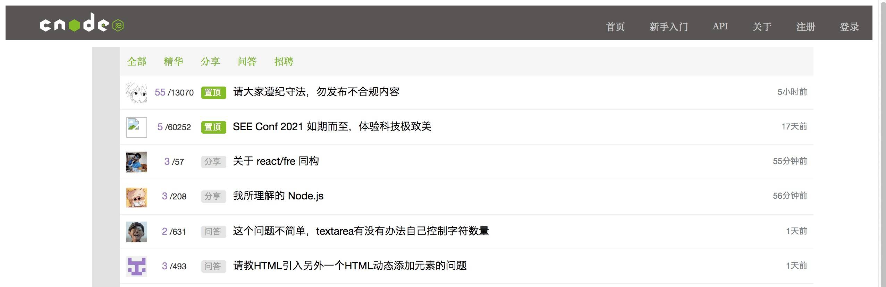
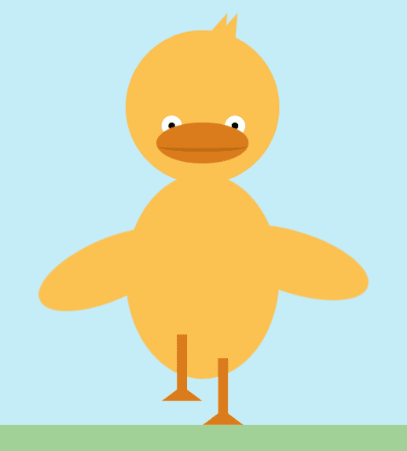
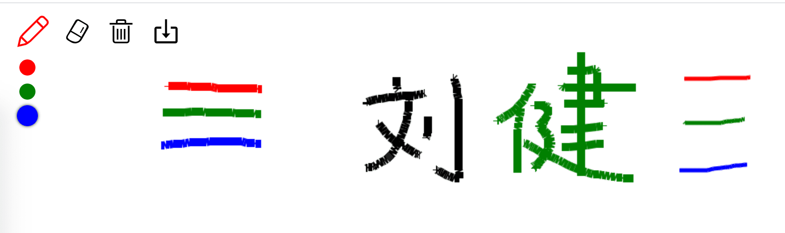

刘健

男 | 27岁 | 武汉 | 手机&微信：18871183644 | 邮箱：liujianlijin@gmail.com
湖北师范大学文理学院 · 计算机科学与技术 | 本科 | 2017年毕业
开源项目
-
CNODE社区源码
预览
一个 Vue 项目。技术栈：Vue.js计算属性、Vue.js的内置指令和事件的绑定、Vue.js的自定义事件和触发、Vue-router路由的跳转和监听、父子组件之间的数据传递。
 -
大梦翻译小程序源码
这是一个微信小程序应用。 支持20多种语言互译，包括中、英、日、德、法、俄、韩、西班牙语、 意大利语、荷兰语等语言。还支持包括文言文和粤语。
-
会动的小黄鸭源码
预览
这是一个可爱作品。用到了 JavaScript、JQuery、CSS3 动画。 预览时，注意页面右上角有三个按钮，点击可调整动画速度。默认速度是「中速」。
 -
在线画板源码
预览
我在学习 Canvas 时做的一个小作品。 主要使用Canvas API，提供PC端及手机端在线画画、橡皮擦等功能，并支持画笔颜色与粗细调整、画作删除、画作下载。

技能
- 熟悉 HTML5、CSS3 和 REM、vw/vh、媒体查询 等移动端适配技术，熟悉 Flex、Grid 布局。
- 熟悉 ES6 常用新特性，比如 const / Promise / await
- 熟悉 Vue，包括 VueCli、VueRouter、Vuex等，能够使用 Vue 全家桶开发项目。
- 熟悉 Git、Webpack、Npm、Yarn、VsCode 等开发辅助工具。 会科学上网 面向 Google 编程；
- 熟悉 HTTP、AJAX；用过 TypeScript 和 ECharts,此简历的在线版本就用了 ECharts。
其他链接
我的技术博客 目前 25 篇技术文章。
我的 GitHub 大概 200 次提交。
工作经历
2018年12月～2021年3月